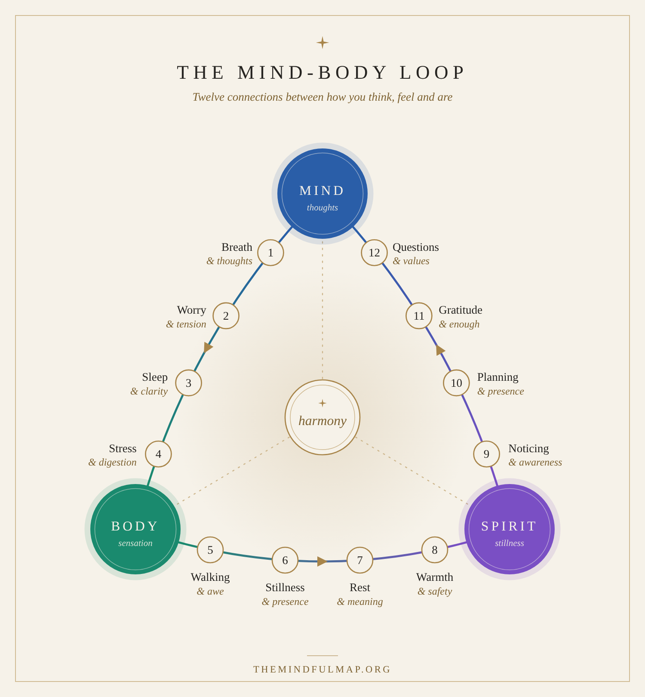

Breath & thoughts
When thoughts race, breathing tends to turn quick and shallow, which can keep the mind racing.
TryFive slow breaths, longer out than in.
Your map
Mind, body and spirit are not three separate rooms. What happens in one shows up in the others, and a small change in one can ease the rest. This map shows twelve of those connections, each with one small thing to try.

How to use it
You do not need to do all twelve. Start where you already feel something.
Mind ↔ Body
The body often reacts to the mind before you notice, and it is often the easiest place to start.
When thoughts race, breathing tends to turn quick and shallow, which can keep the mind racing.
TryFive slow breaths, longer out than in.
Worry often settles in the jaw, neck and shoulders, and you stop noticing it.
TryUnclench your jaw and drop your shoulders, once an hour.
After a short night, thinking usually feels foggier and feelings feel sharper.
TryKeep the same bedtime for a week, and put screens away 30 minutes before.
Stress can show up as a tight stomach, or as eating quickly without tasting anything.
TryEat one meal a day slowly, without a screen.
Body ↔ Spirit
Spirit does not always need big ideas. Often it begins with rest, warmth and a little time outside.
Time outside tends to widen your sense of perspective, and small worries feel smaller.
TryWalk for ten minutes without your phone, and look up.
Sitting still in the body is one of the simplest ways into the present moment.
TrySit, feel your feet on the floor, and stay for one minute.
When you are worn out, little feels meaningful. Rest is not a reward, it is maintenance.
TryTake one unscheduled rest this week, without guilt.
Warmth, a familiar scent or a slow cup of tea tells the body it is safe to soften.
TryChoose one small sensory ritual and repeat it every day.
Spirit ↔ Mind
The same mind that races can also watch itself. This is where the bigger questions begin.
If you can notice a thought, then something in you is already standing a little apart from it.
TryName the thought (“planning”, “worrying”) and let it pass.
The planning mind lives in tomorrow. Stillness lives in now. You need both, in turn.
TryPause for one minute between tasks, and do nothing.
What you pay attention to shapes what feels like enough.
TryAt day’s end, name three specific things that went well.
Quiet makes room for the question underneath the noise, and for what you actually care about.
TryAsk yourself: what do I actually need right now?
Harmony is a habit, not a destination.
If you would like a simple way to practise all three together, try the five-minute ritual.
Begin the five-minute ritualThis map is a reflective guide, not medical advice. If something persists or worries you, please speak to a doctor or another qualified professional.